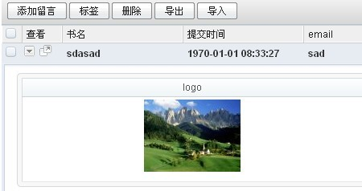

image -图片管理
在notebook添加留言中加上一个图片上传功能，那么就要用到image了！image图片库——所有的图片信息都存在sdb_image_image表中，而我们则可以通过image_id得到我们所要的图片，image继承site，因此当安装好site时我们的image也就安装好了。那么开始使用image。
1.实现图片上传
- 1.1 调用input_image方法实现图片上传到image图片库
打开notebook\app\notebook\view\admin\edit.html文件,在内容行和编辑行中间加入如下代码：
<tr>
<th>LOGO：</th>
<td>
<{input type="image" name="item[item_imageid]" value=$item.item_imageid width=160 height=90}>
</td>
</tr>
进入后台点击添加留言查看效果
点击选择得到
确认后图片就已经上传到图片库里了！预览如下

如果现在点击保存那么就可以得到一个imageid的值了只要吧这个imageid存到我们的sdb_notebook_item中就可以直接调用imageid来显示我们的图片，下面详细介绍图片显示！那么现在我们添加dbschema中item.php文件加上如下代码：
'item_imageid' =>
array (
'type' => 'varchar(32)',
'label' =>'默认图片',
'width' => 75,
'hidden' => true,
'editable' => false,
'in_list' => false,
),
执行更新命令
D:\wamp\www\notebook\app\base>cmd update
点击保存，信息保存成功!
2.图片的显示
- 从sdb_notebook_item表中获取item_imageid显示图片
- 打开\notebook\app\notebook\lib\finder\item.php，增加getList字段item_imageid，具体操作如下：
将
$items = $oItem->getList('item_subject, item_posttime, item_email',array('item_id' => $id), 0, 1);更改为$items = $oItem->getList('item_subject, item_posttime, item_email,item_imageid',array('item_id' => $id), 0, 1); - 将\notebook\app\notebook\view\admin下的itemdetail.html文件修改为:
<meta http-equiv="Content-Type" content="text/html; charset=utf-8" /> <div class="tableform"> <table width="100%" border="0" cellpadding="0" cellspacing="0" class="gridlist"> <thead> <tr> <th>logo</th> <th>留言标题</th> <th>提交时间</th> <th>email</th> </tr></thead><tbody> <tr> <td><img src="<{$item.item_imageid|storager:'s'}>"></td> <td><{$item.item_subject}></td> <td><{$item.item_posttime|cdate}></td> <td><{$item.item_email}></td> </tr> </tbody> </table> </div> </div> - 最终效果效果如下：

- 缩略图效果实现
在notebook\app\notebook\lib\finder\item.php 添加上如下代码：
var $column_edit2 = '缩略图'; function column_edit2($row){ $o = app::get('notebook')->model('item'); $g =$o->db_dump(array('item_id'=>$row['item_id']),'item_imageid'); $img_src = base_storager::image_path($g['item_imageid'],'s' ); if(!$img_src)return ''; return "<a href='$img_src' class='img-tip pointer' target='_blank' onmouseover='bindFinderColTip(event);'> <span> pic</span></a>"; }查看效果:
- 图片大小显示：
显示原图
<img src="<{$image_id|storager}>">显示大图<img src="<{$image_id|storager:'l'}>">显示中图<img src="<{$image_id|storager:'m'}>">显示小图<img src="<{$image_id|storager:'s'}>">